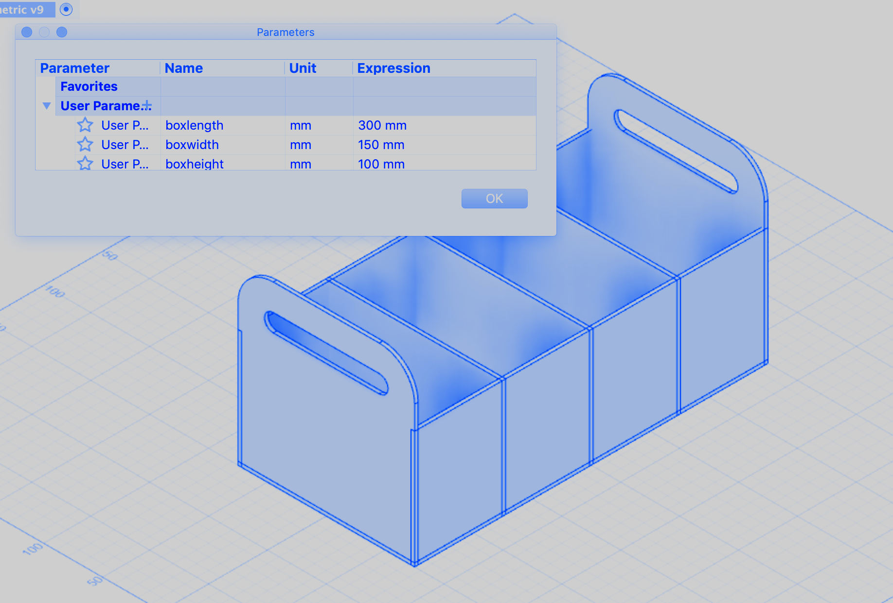
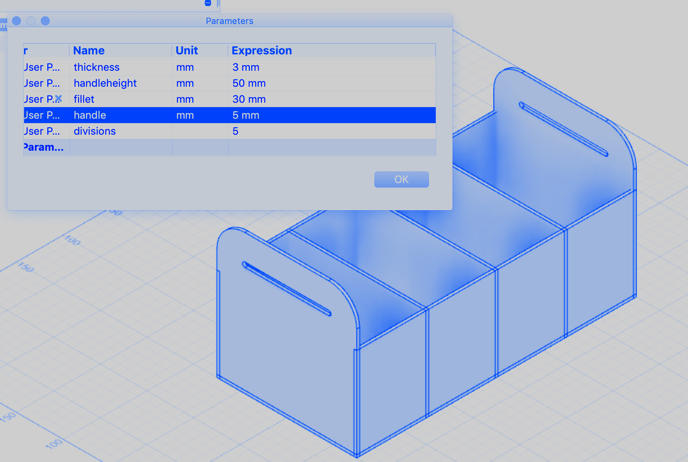

For the 3rd week, we went over some main softwares such as Autodesk Fusion 360 and Rhino to learn more about designing, preparing and assembling models through cutting machines (Laser cut, CNC milling, etc…). For this assignment specifically, we also were supposed to work with parametric design systems, which gives us the option to change specific measurements and dimensions in our designs without having to repeat the whole process as a whole. This system would automatically adapt our design to the dimensions we input at our convenience.
I am still struggling a little bit with Fusion 360, but destined to learn to use the software fully because I like the workflow it presents. I specifically appreciate the fact that it saves the preliminary sketches of our designs which we can always go back to and fix or change if we ever need to. It also has a timeline of all the steps we made at the bottom of the interface, where can we go through steps back and forth. This is ideal for teaching but also optimal to easily identify where we made a mistake and correct it.
After long hours of sketching some possible models to build, I have decided to just follow this tutorial of a box with handles and separators and try to build it. I also felt this is an ideal way to test out the parametric aspect of my design by adding separators, changing dimensions and altering the handles of the box. The tutorial I followed was not on Fusion 360 however, which forced me to challenge myself and find what I need in the software.
I have also followed another tutorial in order to understand more how parametric design works in Fusion 360, as the model in the first tutorial wasn’t parametric. And finally, I have downloaded an Add-In to Fusion which helps makes finger cuts for the construction. It is an automated plug in that automatically creates an intersection between any selected two planes.



And finally, I have followed this nesting tutorial in order to prepare the model for laser cutting.